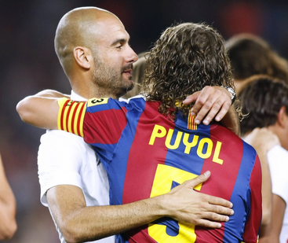
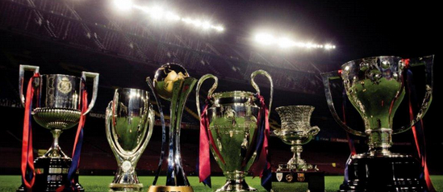
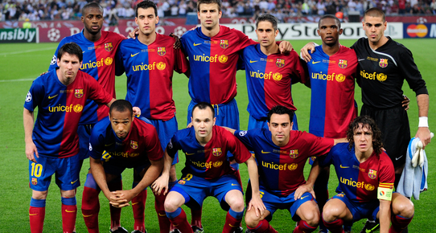

Any del sextet: 2009
Entrenador: Pep Guardiola
Capità: Carles Puyol

Entrenador: Pep Guardiola
Capità: Carles Puyol
Els sis títols del sextet
- Lliga 2008-09: Campions amb un futbol ofensiu i dominant.
- Copa del Rei: Triomf davant l’Athletic Club a la final (4-1).
- Champions League: Victòria contra el Manchester United a Roma (2-0), amb gols d’Eto’o i Messi.
- Supercopa d’Espanya: Guanyada contra l’Athletic Club a doble partit.
- Supercopa d’Europa: Triomf ajustat davant el Xakhtar Donetsk amb un gol de Pedro a la pròrroga.
- Mundial de Clubs: Final èpica contra Estudiantes de La Plata, amb gols de Pedro i Messi. 
Protagonistes d’una llegenda
Aquell equip va comptar amb alguns dels millors jugadors de la seva generació. El trio del mig del camp format per Xavi Hernández, Andrés Iniesta i Sergio Busquets va marcar una època, mentre que al davant brillaven Lionel Messi, Samuel Eto’o i Thierry Henry. A la defensa, noms com Puyol, Piqué i Alves van ser claus.
Un llegat per a la història
El sextet no només va ser una gesta esportiva, sinó també una declaració d’estil. El Barça va imposar un model futbolístic basat en la formació, la tècnica i el joc en equip, i va servir d’exemple per a clubs d’arreu del món. Aquell 2009 es recorda com l’inici d’una de les etapes més glorioses del club.
“El millor Barça de la història. Una obra mestra del futbol.”